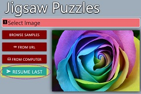

Jigsaw Puzzles lets you turn any image into a jigsaw puzzle. Try the samples images, or select your own. Set the difficulty by increasing the number of pieces.
As you work on a puzzle, your progress is saved automatically. If needed, you can resume your most recent in-progress puzzle.
To browse sample images, click the Browse Samples button. The image selection dialog will appear. Click on any of the thumbnail images to select it and show a larger version in the preview side. When you are happy with your image selection, click Select to finalize your selection.
If you didn't complete your last puzzle, Jigsaw Puzzles will initially show the last puzzle image, and also show a send Resume Last button.  You can resume from the automatically saved state as long as you don't Scramble a new image.
If you don't want to resume, click on one of the image source selection buttons:
You can use any web-based image as your jigsaw puzzle image. As long as you can form a valid URL for the image, you can use it.
You can use any image on your computer as your jigsaw puzzle image. Click on the computer From Computer button to open the file selection dialog.
You can browse the images of puzzles that have been recently completed by others Jigsaw Puzzles players. Only public images, found using the insert_link From URL button, are added to the shared list. Images from websites that require authentication, such as personal photo albums on Google Photos, will not be shared with others.
Click on the cloud_download From Other Players button to open the Recent Completions dialog.
Advanced users have the option of embedding a custom image URL directly into the link that launches the Jigsaw Puzzles landing page. Append "?url=", followed by an image URL. Clicking on such a link will pre-select the given custom image URL.
You can test that the custom image URL is valid by clicking on the Test button
The number of pieces selection sets the difficulty level. 50 pieces is the easiest. 100 or 200 are moderately difficult, while 400 pieces provides a more time-consuming challenge. The higher selections for the number of pieces should only be attempted on large screens.
On desktops and laptops, you may be able to toggle full-screen mode with F11
A zoom level of 50% means that the completed puzzle will occupy 50% of the browser window area. A smaller zoom level will provide more working space after scrambling the puzzle. The default zoom level of 33% should provide ample working area for puzzle pieces.
Press the send Start button to begin working on the puzzle.
The puzzle play starts by showing the completed puzzle. If you are happy with the puzzle image and settings, click Scramble to randomize the pieces. The position and movement of all pieces will now be saved automatically as you play.
To move puzzle pieces, press and drag the piece to a new location. When you move matching pieces next to each other, they will snap together. You can then drag the group as one piece.
During puzzle play, you can change the size of the preview window and the background color through the in-game settings menu.
Clicking on the more_vert button, the 3 vertical dots in the upper right corner of the puzzle-in-progress screen, will show a dropdown menu of additional commands:
You can display a preview image tile at any time with this command. The preview image appears in the upper right corner, but you can drag it to any location. Hovering over the preview image will make additional options appear:
This command will make all non-edge pieces fade, so that it is easier to find edge pieces. You can clear the effect by clicking this button again, or with flash_off Clear effects.
This command will bring all obstructed tiles to the foreground. You can clear the effect by moving all of the obstructed tiles, or with flash_off Clear effects.
This command will clear all flashing tile effects.
This command will set the browser display to fullscreen on compatible devices. This command does not work on Apple products.